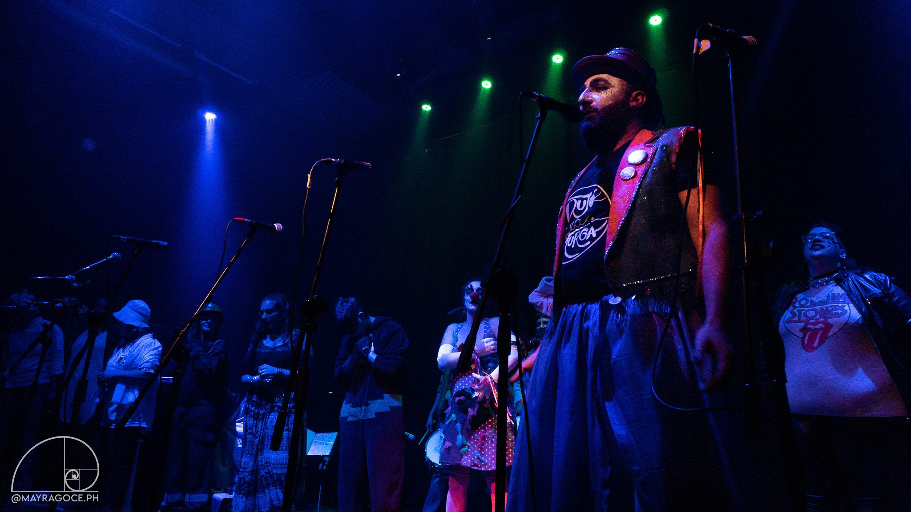

Pero...¿estos quiénes son?
Historia
Pujó La Murga, colectivo artístico de murga estilo uruguayo, nacido en el en el emblemático TAP (Taller de Arte Popular) en su ex sede Gaona y Pujol en el año 2017. Aunque inició como taller recreativo, desde sus orígenes manifestó una particular forma de posicionarse, pensarse y organizarse. La Pujó, Pujó, Pujola, en todas sus formas y colores, ha compuesto hasta el momento tres espectaculos, que se han presentado en diferentes centros culturales, espacios de militancia-activismo y festivales. Pujó La Murga, murga parida. Que empuja, libera, contradice, ríe y reflexiona. Con su repertorio de su última composición DISIDENCIAS, se propone la posibilidad de pensar otras formas de crear, decir, hacer y representar.
Composición Coral
Segundxs
- Juan Cruz Santangelo
- Pablo Pellegrino
- Nicolás Alzamora
Primxs
- Yamila Cinquemani
- Florencia Alvarez
- Sol Aguirre
- Sonia Heit
- Guadalupe Valdone
- Leonardo Javier Mancini
- Morena Moldes
- Juan Francisco Baro Corral
Sobreprimxs
- Alejandra Berton
- Jorgelina Jaeger
- Paola Boada
- Joaquín Podstavka